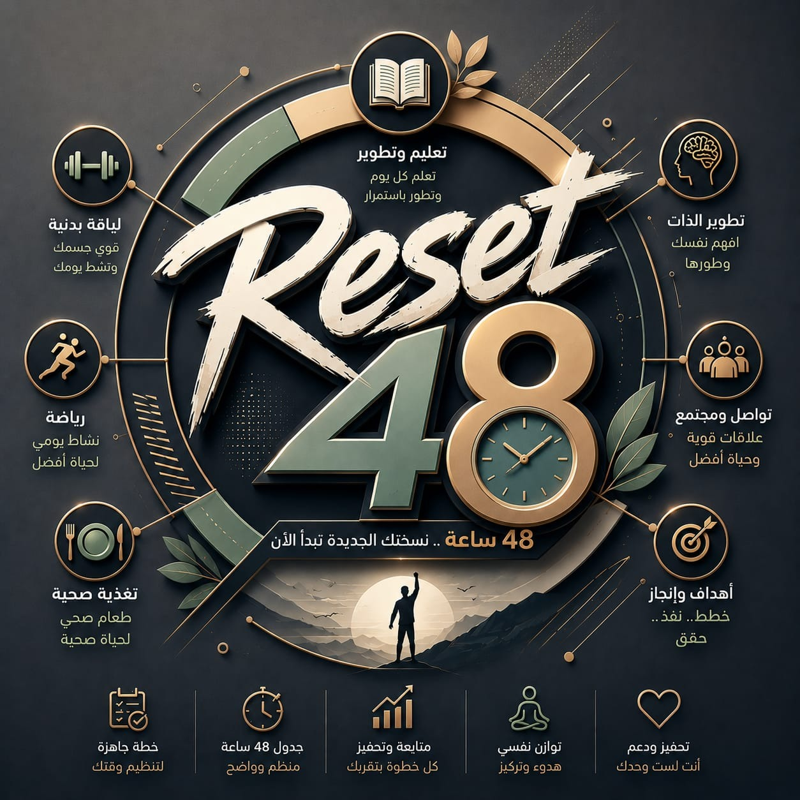

RESET 48
2 days
6 activities
to change YOUR life

Day 1 | Awareness & Discovery
Theme: Understand the Problem
Ice breaking, camp rules, team identity, and realizing energy limits.
Experiencing digital distraction firsthand and discussing digital burnout.
Case study on avoiding certificate collecting without practical projects.
Day 2 | Action & Transformation
Theme: Stop Learning… Start Applying
Teams execute hands-on challenges using practical tools.
Designing a realistic daily routine and building personal action habits.
Reflecting on phone separation, celebrating winning teams, and wrap-up.
The Challenges (Part 1)
1. Battery Challenge
اختيار الفرق لأنشطة مختلفة تجاوزت الـ 100% من طاقتهم، ثم إعادة الترتيب للوصول للحد المناسب.
Takeaway: طاقتنا محدودة، لازم نحدد أولوياتنا ونركز على اللي يخدم هدفنا.2. The Reality Check
دراسة حالة عمر (أكثر من 30 شهادة بدون خبرة عملية) لمناقشة مخاطر جمع الشهادات وتجنب الإرهاق الرقمي.
Takeaway: المهم مش عدد الشهادات، المهم إيه اللي تقدر تعمله باللي اتعلمته.3. Skill in Action
تطبيق عملي لمدة 30 دقيقة باستخدام أدوات مختلفة (Canva, Excel, AI) لتحويل المعرفة لمهارة حقيقية.
Takeaway: المعرفة بتخليك تعرف، لكن التطبيق هو اللي بيحول المعرفة لمهارة.The Challenges (Part 2)
4. Digital Detox Reflection
مناقشة تجربة ترك الموبايلات، تأثيرها على التركيز، وإزاي نتحكم في التكنولوجيا بدل ما هي اللي تتحكم فينا.
Takeaway: استخدم التكنولوجيا كأداة تساعدك، مش كمصدر يسرق تركيزك.5. The Perfect 24
تصميم جدول يومي واقعي يوازن بين الدراسة، التطبيق، الراحة، الجيم، والعيلة لضمان الاستمرارية.
Takeaway: إدارة الوقت مش إنك تملى يومك بالمهام، لكن إنك تحدد أولوياتك وتعمل خطة واقعية. Consistency beats intensity.Ready to Reset?
Stop Collecting... Start Applying.